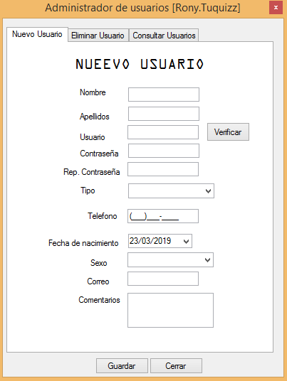
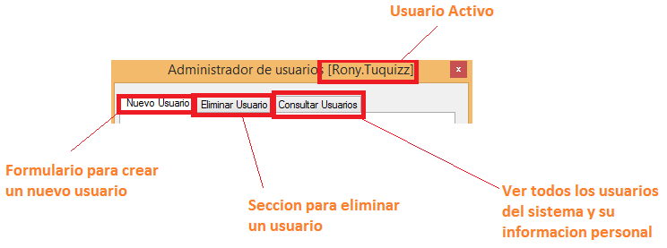

Riku
Administrador de usuarios

El administrador de usuario es una herramienta desarrollada para mantener un control
y organizacion de los usuarios que tienen acceso al sistema.
Con ayuda de esta herramienta puedes Agregar Nuevos Usuarios,
Eliminar Usuarios, y mantener un control en cuanto a ver toda la Informacion Personal
de todos los usuarios con acceso al sistema.

- Formulario para crear un nuevo usuario:
Es la seccion para crear un nuevo usuario ingresando sus datos en el formulario.
- Seccion para eliminar un usuario:
Este simple formulario permite eliminar un usuario del sistema de manera individual
utilizando su numero de identificacion del usuario a eliminar.
- Ver todos los usuarios y su informacion personal:
Despliega una tabla mostrando toda la informacion, incluyendo informacion personal
y claves de cada usuario con acceso al sistema.
Notas Especiales
Es importante aclarar que alguno de los formaularios presentados en esta herramienta
necesiten validacion y rellenar todos sus campos.
en caso
de no tener la informacion se puede usar "N/A" o simplemente un simple guion (-).
Generado el 23/03/2019